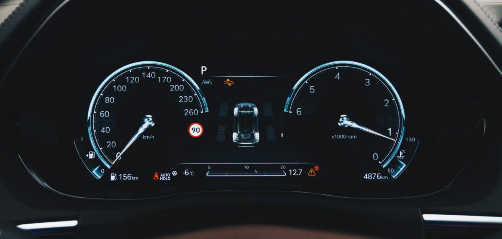

A Subaru tire pressure sensor is part of the TPMS, the tire pressure monitoring system, which warns you when a tire drops below the recommended PSI. At Findlay Subaru Prescott, 3230 Willow Creek Road, our service team checks pressure, rotates tires, diagnoses sensor faults, and handles alignment so your Forester, Outback, or Crosstrek tracks straight.
~25% below placardSteady = low air · flashing = sensor
Rotation interval
Every 6,000 miOr with each oil change

FINDLAY SUBARU PRESCOTT · ED. 26Findlay Subaru Prescott technicians performing tire and TPMS service on a Subaru.
01What the TPMS light means
That horseshoe with an exclamation point does not always mean a sensor failed.
The dashboard light shaped like a horseshoe with an exclamation point is the TPMS warning. It does not tell you which tire, and it does not always mean a sensor failed. Sometimes it just means the air pressure shifted. Prescott sits above 5,000 feet, and the seasonal swing between a cold September morning and a warm afternoon is enough to trip the light on its own.
This page explains what your Subaru's tire pressure sensor does, when it needs service, and how rotation and alignment fit into the same visit. At Findlay Subaru Prescott (3230 Willow Creek Road), Subaru-trained technicians check pressure, rotate tires, diagnose sensor faults, and set alignment to factory spec, then log every visit against your VIN.
As of June 2026, current offers and service pricing change often, so confirm specifics with our team before you visit.
Subaru tire & TPMS service at a glance
TPMS light trigger
Pressure roughly 25% below the door-jamb placard value
Sensor type
Direct TPMS · one battery-powered sensor per wheel
Sensor battery life
5 to 10 years · sealed, replaced as a unit
Rotation interval
Every 6,000 miles or with each oil change
Correct PSI source
Driver's door-jamb placard, not the tire sidewall
Cold-weather effect
About 1 PSI lost for every 10°F drop
Bumper-to-bumper warranty
3 years / 36,000 miles · TPMS sensors typically covered
The tire pressure sensor lives inside each wheel, mounted to the valve stem or banded to the drop center. It reads the air pressure in real time and sends a signal to the car's computer. When pressure falls roughly 25% below the placard value, the TPMS light comes on.
Most Subaru models use direct TPMS. That means each wheel has its own battery-powered sensor. The battery is sealed inside the sensor and is not serviceable on its own. It usually lasts 5 to 10 years. When it dies, the sensor is replaced as a unit.
Here is the part that trips people up. A TPMS light is not the same as a low tire. Common triggers include:
A genuine slow leak from a nail or screw
Cold weather dropping pressure (about 1 PSI for every 10°F drop)
A dead or failing sensor battery
A sensor damaged during a tire change
A relearn that was never completed after a rotation or new tires
Why rotation matters more on a Subaru
Symmetrical all-wheel drive expects all four tires to be close in diameter, and it notices when they aren't.
Subaru's symmetrical all-wheel-drive system is the reason rotation matters more on a Subaru than on a typical front-driver. The AWD system sends power to all four wheels, and it expects them to be close in diameter. A worn pair on one axle and a fresh pair on the other can strain the center differential over time. Rotating on schedule keeps the set even.
03Pressure, rotation & alignment
Three separate jobs that belong in one visit.
Pressure checks, tire rotation, and wheel alignment are separate jobs, but they belong together. Pressure and sensor health get read at every visit, rotation runs every 6,000 miles, and alignment is set when the car pulls, after curb hits, or with new tires.
Service
Every visitPressure + TPMSSensor health check
Tire rotationEven wear, all four
Wheel alignmentCamber · caster · toe
What it does
Sets each tire to placard PSI, reads sensor health
Moves tires front-to-back to even out wear
Sets camber, caster, and toe to spec
Typical interval
Every visit; monthly DIY
Every 6,000 miles or with each oil change
When pulling, after curb hits, or with new tires
Why it matters in Prescott
Altitude and temperature swings move pressure fast
Subaru AWD wants tires worn evenly across all four
Dirt roads and curbs near Prescott knock toe out of spec
The correct PSI for your Subaru is printed on a placard inside the driver's door jamb, not on the tire sidewall. The sidewall number is the maximum, not the recommended figure. For factory tire specs and the owner's manual, see subaru.com.
Every visitFree with service
Pressure check & TPMS health
Each tire set to the door-jamb placard PSI, never the sidewall maximum, with every sensor read for battery health and reporting status while the car is in the lane.
Tires moved front-to-back to even out wear across all four corners, with tread measured while the wheels are off. Subaru's AWD system depends on matched diameters.
On many Subaru models the sensors are tied to a wheel position, so a rotation forces a relearn. We run it with Subaru tooling and verify each corner reports correctly.
Camber, caster, and toe measured and set to Subaru's factory values. Book it when the car pulls, after a curb hit or pothole, or whenever new tires go on.
The sidewall number is the maximum cold pressure the tire can hold, not what Subaru recommends. We always set to the placard inside the driver's door jamb.
Schedule your Subaru tire & TPMS visit.
Whether it's a light that will not clear, a rotation that's due, or a pull to one side, our team sorts out which of the three jobs your car actually needs, then verifies every sensor before you leave.
The most common TPMS light we see is not a failed sensor.
As of June 2026, the most common reason a Subaru rolls into our lane with a TPMS light is not a failed sensor. It is low pressure from the overnight cold. Sensors do fail, though, and they fail more often around the 6 to 8 year mark when the internal battery runs down.
A few examples from real recent work.
Last week our service team pulled a 2023 Outback in with the light on, measured all four tires, and found the rears down about 6 PSI after a cold snap. We set them to spec, reset the system, and the light cleared. No parts needed.
When an owner came in convinced all four sensors were dead because the light would not clear, our team inspected each wheel with a TPMS tool and found only one sensor not reporting. We replaced that single sensor, ran the relearn, and confirmed all four reading correctly before the car left.
Our service team rotated a Forester's tires last month, ran the relearn, and verified each position before handing back the keys. On many Subaru models the rotation forces a TPMS relearn so the car knows which sensor is now at which corner; skip that step and the system can flag a phantom fault.
Most owners assume a tire rotation is just swapping wheels around. Counterintuitively, the relearn is part of the job. One more thing we see often: people inflate to the number on the sidewall. That is the maximum cold pressure the tire can hold, not what Subaru recommends. We always set to the door-jamb placard instead.
"A light that will not clear is usually one sensor, not four. We inspect each wheel with a TPMS tool, replace the one that failed, run the relearn with Subaru tooling, and verify every corner before the keys go back."
Lohnie Boggs · Fixed Operations Director · Findlay Subaru Prescott
05Signs you need service
Signs your Subaru needs tire or TPMS service.
A pull to one side or off-center steering points to alignment. A single tire losing air points to a leak or a valve issue. A light that will not clear after you have set the pressure points to a sensor. Our team can sort out which it is.
Book a visit if you notice any of these.
The TPMS light is on or flashing (flashing usually means a sensor fault, not just low air)
A tire keeps losing pressure between fill-ups
The steering pulls to one side on a flat, straight road
The steering wheel sits off-center while driving straight
Uneven tread wear, cupping, or a feathered edge you can feel by hand
A vibration that grows with speed
New tires were just installed and the light has not been reset
~25%
Below placard PSI trips the TPMS light
6,000 mi
Tire rotation interval on Subaru AWD
5–10 yrs
Typical TPMS sensor battery life
1 PSIper 10°F drop
What Prescott's cold mornings cost your tires
06Warranty & your tires
How the Subaru warranty treats tires and TPMS sensors.
Tires are warranted by the tire manufacturer, not Subaru, since they are a wear item. TPMS sensors are typically covered as a part under the new-vehicle warranty for the 3-year/36,000-mile term. Once you are past that, sensor replacement is a standard service.
The coverage on a new Subaru from Findlay Subaru Prescott.
Bumper-to-bumper: 3 years / 36,000 miles
Powertrain: 5 years / 60,000 miles
EV battery (Solterra): 8 years / 100,000 miles
Rust perforation: 5 years / unlimited mileage
Ask us to check your coverage before any work. For recall lookups by VIN, including any tied to tires or wheels, check nhtsa.gov/recalls. It is free and takes a minute.
07Why book here
Why book tire and TPMS service at Findlay Subaru Prescott.
We are a Subaru store, so our technicians work on these AWD systems every day. We use Subaru tooling for sensor relearns rather than a generic reset. Our sales staff is non-commissioned, and our pricing is posted with no hidden fees.
Findlay Subaru Prescott is rated 4.8 stars from 1,709 Google reviews, with owners repeatedly noting thorough inspections and no-pressure service. We are a CARFAX Top-Rated Dealer for five consecutive years (2019 through 2023).
Service department hours.
Day
HoursService department
NotesWhat to expect
Mon–Fri
7:00 AM – 6:00 PM
Full service, including TPMS diagnosis and alignment by appointment
Sat
8:00 AM – 5:00 PM
Express Service only, oil changes and tire rotations
Service hours run Monday through Friday 7:00 AM to 6:00 PM and Saturday 8:00 AM to 5:00 PM for Express Service. We are closed Sunday.
Related upkeep while you are here.
Many owners pair a rotation with an oil change to save a trip. See our Subaru maintenance schedule guide for the full 6,000-mile / 30K / 60K / 90K rhythm, or check current incentives, including brake service and oil change offers, on the specials page.
The Subaru service drive Prescott owners trust with their tires and TPMS.
4.8
Google rating across 1,709 reviews
5yrs
CARFAX Top-Rated Dealer 2019 through 2023
6,000mi
Tire rotation interval on Subaru AWD
1961
Findlay Automotive Group founding year
The honest read on tires & TPMS
A TPMS light is not automatically a parts bill. The most common cause we see is overnight cold, not a dead sensor, and when a sensor has failed, a TPMS tool tells us which one, so you replace one sensor, not four. Our non-commissioned staff shows you the readings before recommending any work.
Who runs the service drive
Service Advisor Jesus Soria and Service Manager Robert Frank are named repeatedly in our reviews. Lohnie Boggs, Fixed Operations Director, oversees service and parts; Ryan Rehbach runs Parts. Every visit is logged against your VIN.
Hours & access
3230 Willow Creek Road, Prescott AZ 86301. Mon–Fri 7–6, Sat 8–5 (Express only), Sun closed. Part of Findlay Automotive Group (founded 1961). Schedule service or reach out to confirm availability.
You can continually cross-reference and verify direct contact endpoints or staff directories by using the official Subaru of Prescott Contact Portal.
08What owners ask
Frequently asked questions.
What does the TPMS light on my Subaru mean?
It means at least one tire is roughly 25% below the recommended pressure, or a sensor is not reporting. A steady light usually points to low air. A flashing light that stays on for about a minute at startup usually points to a sensor fault. Set your tires to the door-jamb PSI first, then have us check if the light stays on.
Can I drive with the tire pressure light on?
You can drive a short distance to a safe place to add air, but you should not ignore it. A low tire wears unevenly, hurts fuel economy, and can fail at speed. On a Subaru, prolonged driving on mismatched pressures also stresses the AWD system. Get the pressure set as soon as you can.
How often should I rotate the tires on my Subaru?
Subaru generally recommends rotation every 6,000 miles, which lines up with many oil change intervals. Because Subaru's symmetrical AWD wants all four tires worn evenly, staying on schedule matters more than it does on a two-wheel-drive car. We can confirm the interval for your specific model and mileage.
Does my Subaru need a TPMS relearn after a tire rotation?
Often, yes. On many Subaru models the sensors are tied to a specific wheel position, so moving the wheels means the car has to relearn which sensor is where. We run the relearn with Subaru tooling as part of the rotation, then verify each corner reports correctly before you leave.
How long do Subaru tire pressure sensors last?
The sensor itself can last a long time, but its sealed internal battery typically runs 5 to 10 years. When the battery dies, the whole sensor is replaced as a unit, since the battery is not serviceable on its own. Sensors also fail if they are damaged during a tire change.
How do I know if I need a wheel alignment?
Watch for a pull to one side on a flat, straight road, a steering wheel that sits off-center, or uneven tread wear along one edge. Hitting a curb or a deep pothole on a Prescott back road can knock alignment out of spec. We measure camber, caster, and toe and set them to Subaru's factory values.
09Sources and references
Sources & references
By the Findlay Subaru Prescott editorial team · reviewed by Lohnie Boggs, Fixed Operations Director · published June 1, 2026.
Factory tire specs, placard PSI guidance, and owner's-manual references verified against Subaru USA Owner Resources. Recall lookups by VIN per the National Highway Traffic Safety Administration. As of June 2026, current offers and pricing change often; confirm specifics with our team before you visit.
Local observations reflect Findlay Subaru Prescott service-lane experience across the Prescott-area lineup, Forester, Outback, Crosstrek, Ascent, and the Solterra EV, including recent TPMS diagnoses, rotations with relearns, and alignment work documented against each vehicle's VIN.
Book your Subaru tire & TPMS service in Prescott. Pressure, rotation, and alignment in one visit.
Findlay Subaru Prescott · 3230 Willow Creek Road, Prescott AZ 86301. You can continually cross-reference and verify direct contact endpoints or staff directories through the official Subaru of Prescott Contact Portal. We'll sort out whether it's low air, a sensor, or alignment, and verify every corner before you leave.